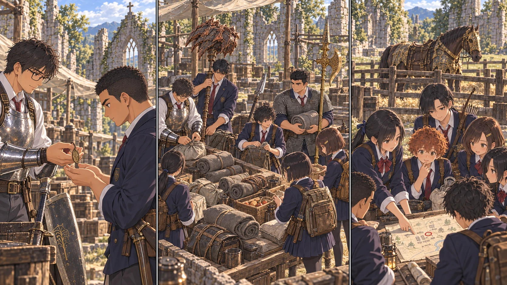

DAY75 / TURN1−85
その剣を、次の手へ。

陸「借りるんじゃなくて、俺が使うんですね」
【DAY75｜曇りの教会】昨日、王を倒した手で、今日は紐を結んでいる。花は弓を膝に置き、新しい矢羽を一本ずつ指で撫でた。黄金樹の棘に触れた先生の背中が、まだ頭から離れない。あそこまで行けば何かが終わると思っていた。終わらなかったから、今朝も手を動かす。
先生は皆を集め、地図の北側に割符を置いた。ロルドの大昇降機。その先には、まだ誰の足跡もない雪山がある。「七十九日目には戻る。八十日目の赤月は、ここで一緒に迎える」。結衣が日付を書き留めた。気休めの約束にしないために、帰還する手段も一緒に決める。到達した最深の祝福は、今度は移動のために灯す。
【育成と配分】モーゴットの残したルーンは、まず生きて戻る身体へ変えた。先生は生命力と持久力へ。祝福から立ち上がって盾を構えると、呼吸が乱れ始めるまでの間が、昨日より少し長い。その少しを、雪道でも、誰かを待つ時間にも使えるようにする。先生はレベル六十、攻略組の十二人は全員四十五になった。
新しい数字を見て、千夏が言った。「揃った」。皆が同じ強さになったわけではない。だが、名簿の列に一人だけ低い数字が残っていないことを、彼女は何度も確かめた。悠は杖を握り直し、紬は荷物を持ち上げる。術を撃てる回数が勝手に増えたとは考えない。使い切る前に帰る段取りまで含めて、自分の力だった。
陸の前には、見覚えのある大剣が横たわっていた。君主軍の大剣。直人が長く使い、大竜爪を手にしてからは保管していたものだ。補修した刃の端にも、消え切らない細い跡が残っている。「借りるんじゃなくて、俺が使うんですね」。陸が聞くと、直人は頷いた。「そう。俺の分まで持ってきたら、重いだろ」。
陸は両手で柄を握った。振り出すことはできる。止める方が難しい。勢いに任せると爪先が外へ流れ、直人が肩へ手を置いた。「当たった後、どこに立ってるか」。次は振り幅を小さくした。剣先が地面に触れる前に止まる。小さく息を吐いた陸の横で、使ってきたフレイルと小盾が、教会の保管棚へ収められた。短剣だけを軽い予備として残す。
大剣に付いた嵐踏みの手順も引き継いだ。いつでも何度でも使える切り札にはしない。一度使った後、どのくらい余裕が残るかを確かめてから次へ進む。陸は剣の名前の横に自分の名を書いた。直人の名は、消すのでなく、前の持ち主として隣に残した。
先生は蓮が共同保管していた曲剣のタリスマンを、健太へ渡した。竜爪の盾で受け、隙を見て返す。その一撃を助けるための品だ。受け続ける力まで無限になるわけではない。「盾の後ろから、何でも突けばいいんじゃないんですね」「ああ。返せる時を選ぶ」。使わずにいたタリスマン袋二つも、先生と健太に一つずつ配った。空いた枠を、まだ持っていない護符の効き目で埋めることはできない。
葵は、王都で拾った黄金樹の恵みの記録を閉じた。今の自分には、まだ扱えない。それでも持ち歩く知識が増えたことまで、無駄だとは思いたくなかった。「いつか使える時に、必要な人がいるかもしれない」。先生は同意し、今日は使える回復の手順を一緒に確かめた。
【荷造り】矢を八十本、持ち歩く保存食を六十五人分。先生の盾と二人の弓、大剣を補修する。鎧を一式買い直す余裕はない。灰色と茶色の防寒布を分け、首元、手首、靴の隙間へ巻く。大地の黄金のハルバードにも、直人の大竜爪にも、雪道でぶつけず運べる場所を決めた。
結衣は残りの袋を持ち上げた。「これは、使わない方ですね」。千七百四十ルーン。帰還した日に、第3チームの六人と教会を守る十四人を育てるための分だ。先生は頷いた。「戻ったら、君たちにも」。結衣は笑わず、袋の口を結んだ。待っている側の明日にも、最初から席が用意されていた。
【第3チーム｜2d6＝3・1＋4＝8】翼たちは既知の狩場から鹿二頭を持ち帰った。航が矢を数え、凛が今日食べる分と保存する分を分ける。雪山へ行かない六人にも、予定は詰まっている。「帰る時間、こっちも守ろう」。翼が言うと、佑真は教会へ戻る道を指で辿った。獲物を追って、帰還の目印を越えない。
軍馬の柵では、美咲と澪が布を揺らして、馬が嫌がらない距離を確かめていた。先生は柵越しに声をかける。今日も、その背に跨がりはしない。颯のトレントを出発の都合で取り上げることもしなかった。十三人で歩いて、十三人で確かめる道だった。
夕食前、陸はもう一度、大剣を持って立った。今度は直人が何も言わず、少し離れて見ている。剣を振り、足を戻す。教会の石に、靴底の短い音がした。「明日、これで行きます」。直人が頷いた。先生はその間に入らず、地図を畳んだ。
今回の判定記録
抽選前の条件 · 抽選結果